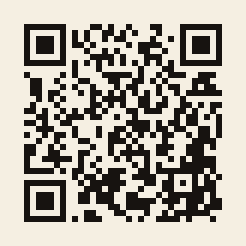

DUNGEON MOGUL · TESTBEREICH
Hier liegen Proben aus der Entwicklung, zum Ausprobieren am Handy oder am Rechner. Alles ist Zwischenstand: keine fertige Grafik, kein Speichern, Zahlen sind Platzhalter.
Was gerade zu testen ist
Tile-Karte · Probe vom 09.11. (v5)
Wie liest sich ein Dungeon als Karte? Am Handy öffnen, kurz zuschauen, dann die fünf Fragen beantworten.
Wie liest sich ein Dungeon als Karte? Am Handy öffnen, kurz zuschauen, dann die fünf Fragen beantworten.

Am Rechner? Mit dem Handy scannen, dann öffnet sich die Probe direkt dort.
Rückmeldung
Am liebsten frei heraus: was sofort klar war, was gehakt hat, was gefehlt hat. Die Fragen zur jeweiligen Probe stehen auf der Probe selbst (rechts oder über „Info“). Antwort bitte direkt an den, der dir den Link geschickt hat.